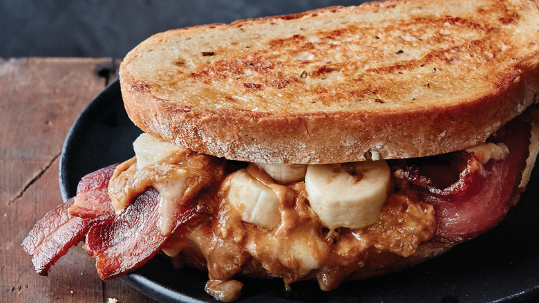

Elvis Sandwich

Description
This sandwich was made famous by The King himself. It's a peanut butter sandwich with a twist. With the addition of bacon and bananas, this sweet treat is sure to fill your stomach!
Ingredients
- 3 tablespoons peanut butter
- 2 slices white bread
- 1 banana, peeled and sliced
- 3 slices cooked bacon
- 1 1/2 teaspoons butter
Steps
- Spread the peanut butter on one side of one slice of bread. Top with sliced banana, then slices of cooked bacon. Cover with the other slice of bread. Spread butter on the outside of the sandwich.
- Heat a skillet over medium heat. Fry the sandiwch on each side until golden brown and peanut butter is melted, about 4 minutes total.